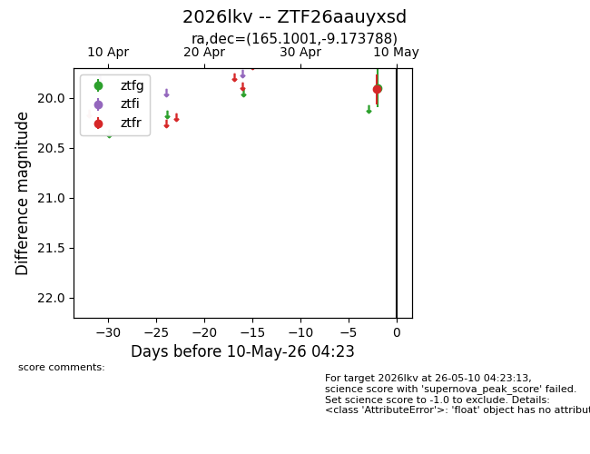
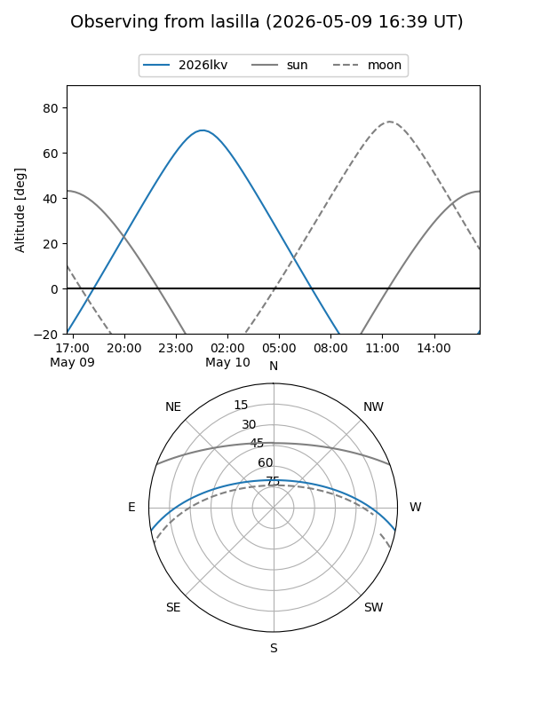
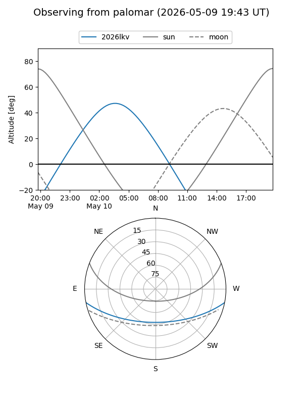

2026lkv
Target 2026lkv at 2026-05-10 04:24
Aliases and brokers:
FINK: link
Lasair: link
ALeRCE: link
TNS: link
YSE: link
alt names
ZTF26aauyxsd (ztf,fink_ztf)
2026lkv (tns,yse)
Coordinates:
equatorial (ra, dec) = 165.1001,-9.17379
equatorial (HMS+DMS) = 11:00:24.03,-09:10:25.64
galactic (l, b) = (262.5303,+44.81258)
Flags:
Photometry:
last ztfg=19.90, ztfr=19.91
1 ztfg, 1 ztfr detections
Lightcurve

Visibility


Additional plots